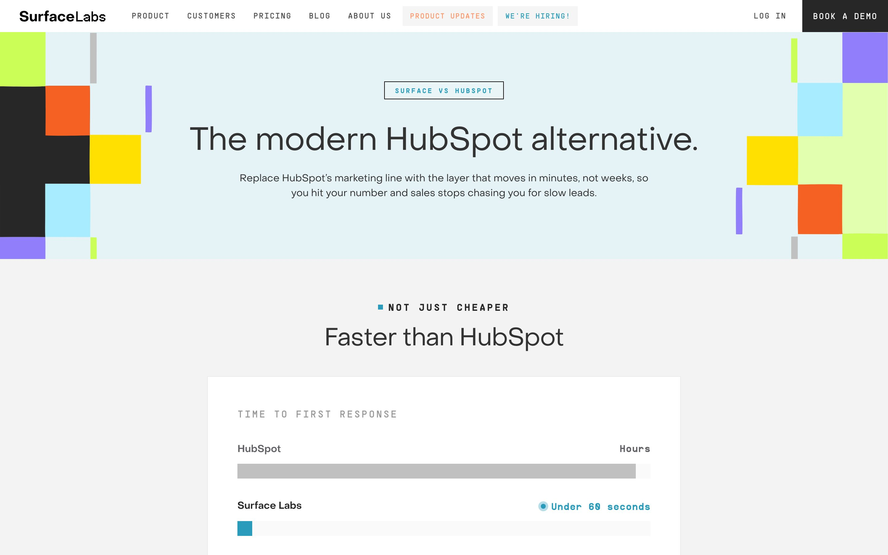
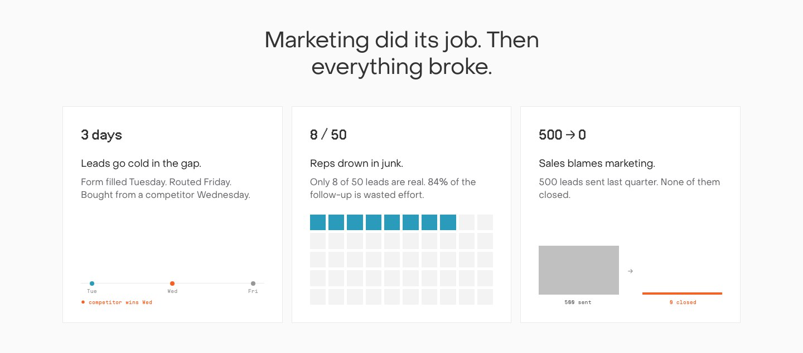

Seventeen pages designed in Claude, shipped to production in two weeks.
Surface Labs is a YC company building an AI-native GTM platform. It reports 30% more demos in 30 days and 50,000+ leads captured a month for 100+ B2B teams. As a contract design engineer, I designed each page in Claude. Then I built it in the production Next.js repo with Claude Code and merged it as a reviewed pull request. Most are live on withsurface.com today, with the rest in review.
There was no handoff. The same hands that designed each page shipped it to production.
On-brand by construction.
I built the pages as a system, not one-offs. Every new page starts as a small file of content: a headline, the stats, the links. A shared template turns that file into the finished page. Write the content, and the page builds itself, on-brand every time.
The competitor pages run one formula: the headline is an argument, exactly three reasons, an honest capability matrix, one CTA. I built it once, then drove every rival from a data file.

Style comes only from the Surface kit, so every page passes as a withsurface.com page. A design-token check blocks raw hex, so pages stay on the kit before they ship. The same engine, different data.

Seventeen pages designed and shipped in roughly two weeks: strategy guides, persona pages, competitor pages, an industries directory. I composed with the team's component kit. I shipped the pages, not the kit.
I also ship interactive lead tools. This one finds where a B2B funnel leaks, stage by stage. The live, clickable version runs at withsurface.com/lp/pipeline-diagnosis.
A healthy main branch matters more than my commit count.
Six merges once landed before they were cleared. I reverted all of them. Then I re-shipped the same work as consolidated, reviewed pull requests.
Most core pages are merged and live. The rest sit in review, where they belong. The revert is the point.
One codebase renders every film.
I also build motion systems. One data file drives each film across square, vertical, and wide. Swap the data, and the visuals and the SFX re-sync by construction (the films play silent here).
Everything is rebuilt in code with Remotion; no screen recordings. First brief: the AI Visibility Index, an honest leaderboard where a competitor wins and Surface is the CTA.
Same system, a different brief. Four AI models answer the same prompt. The divergence is the story.
Live on withsurface.com, shipped as reviewed PRs.
The role: the designer who ships the last mile in code, via Claude Code, on the team's Next.js repo.
Surface reports roughly 30 percent more demos in 30 days. That is their product claim, not my result.
Pages I designed and shipped, all live: